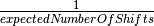
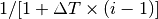
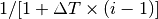

7. Configuration¶
7.1. Control File¶
Configuration options and parameters in BAMM are specified in a control file, a plain text file in which each line contains the name of the option or parameter, an equal sign, and the value of the option or parameter:
treefile = whaletree.tre
runMCMC = 1
The path of the control file, relative to the directory in which bamm
is called, is specified with the flag -c:
./bamm -c divcontrol.txt
7.2. General Options and Parameters¶
The following describes the configuration options and parameters
that are required regardless of the specific model used.
For true or false values, 1 is used for true and 0 is used for false.
File paths are relative to the directory in which bamm is called.
7.2.1. General¶
modeltype- The type of model BAMM uses for analysis.
If
speciationextinction, run with a speciation/extinction model. Iftrait,run with a phenotypic evolution model. treefile- The file path of the input tree (in Newick format). For speciation/extinction analyses, the tree must be ultrametric, fully bifurcating, and have unique tip names.
runInfoFilename- The path of the file to output general information about the current run.
sampleFromPriorOnly- If
1, run by sampling from the prior only (ignoring likelihood contribution to posterior). If0, run the full analysis. autotune- Experimental option for tuning MCMC operators.
runMCMC- If
1, run the MCMC sampler. If0, just check to see if the data can be loaded correctly. simulatePriorShifts- If
1, simulate prior distribution of the number of shift events, given the hyperprior on the Poisson rate parameter. As the prior probabilities of shifts can now be calculated analytically (as described here), this option is no longer necessary and is set to0by default. loadEventData- If
1, load a previous event state (event locations and parameter values) from a file. This allows a run to be continued even after a previous run has finished. The file format is identical to that of the default output fileevent_data.txt. Only the data from the last generation will be processed if the file contains data for multiple generations. For example, to load the data from a previous run, copy the output event file (event_data.txt) to something likeevent_data_in.txtand use this file in theeventDataInfileoption (below). Note thatevent_data.txtwill be overwritten by the new run (unless you change its name in the configuration file), so if you’d like to keep those data, copy the file to a new one. eventDataInfile- The file path of the event data to be loaded (used only if
loadEventData = 1). initializeModel- If
1, initializes MCMC. If0, just check parameter file and ensure that data can be read. seed- Seed for the random number generator.
If
-1, the seed is obtained from the clock time. overwrite- If
1, overwrite output files if they already exist with identical filenames. If0, do not run if output files already exist with identical filenames. validateEventConfiguration- If
1, rejects proposals that cause a branch and both of its direct descendants to have at least one event. Such an event configuration may cause the parameters of the parent event to change to unrealistic values. If0, no such proposals are immediately rejected. The default value is0.
7.2.2. Priors¶
expectedNumberOfShiftsBAMM will use this value to calculate the prior probability distribution on the number of rate shifts. In previous versions of BAMM this was specified via the
poissonRatePrior, which is simply . Suggested values:expectedNumberOfShifts = 1.0for smaller datasets (< 500 tips) orexpectedNumberOfShifts = 10or even50for large (5000+ tips).
7.2.3. MCMC Simulation¶
numberOfGenerations- Number of MCMC generations to run.
mcmcWriteFreq- Frequency (in generations) at which to print MCMC details
to
mcmcOutfile. eventDataWriteFreq- Frequency (in generations) at which to print event details
to
eventDataOutfile. printFreq- Frequency (in generations) at which to print output to the screen.
outName- If present (may be commented out), prefixes output files with the given text.
mcmcOutfile- The path of the file to which to write the MCMC output.
eventDataOutfile- The path of the file to which to write the raw event data. All of the results are contained in this file, and all branch-specific speciation rates, shift positions, marginal distributions, etc., can be reconstructed from this output. See Analyzing BAMM output with BAMMtools for more information on working with this output format.
outputAcceptanceInfo- If
1, outputs whether each proposal was accepted. The number identifying the proposal matches the one in the code. The default value is0(i.e., do not output this information). acceptanceInfoFileName- The path of the file to which to write whether each proposal was accepted.
outputAcceptedInfomust be set to1for this information to be written. The default value isacceptance_info.txt. acceptanceResetFreq- Frequency in which to reset the acceptance information.
The default value is
1000. updateEventLocationScale- Scale parameter for updating local moves of events on the tree.
This defines the width of the sliding window proposal. This parameter
is specified in units of “total tree depth” to minimize scale dependence.
Suppose you have a tree of age T (T is the time of the root node). Parameter
updateEventLocationScaleis in units of T. A value of 0.05 means that the uniform distribution for event location changes has a width of 0.05T. updateEventRateScale- Scale parameter (proportional shrinking/expanding) for updating the rate parameter of the Poisson process.
localGlobalMoveRatio- Ratio of local to global moves of events.
7.2.4. Metropolis Coupled MCMC¶
The Metropolis coupled MCMC implementation in BAMM is based on a “global exchange scheme” for synchronization as described in Altekar et al (2004) Parallel Metropolis coupled Markov chain Monte Carlo for Bayesian phylogenetic inference.
numberOfChains- Number of Markov chains to run. The default value is
1. deltaT- Temperature increment parameter. This value should be > 0.
The temperature for the
 -th chain is calculated as
.
The default value is
-th chain is calculated as
.
The default value is 0.1. swapPeriod- Number of generations in which to propose a chain swap.
The default value is
1000. chainSwapFileName- Name of the file in which to output data about each chain swap proposal.
The format of each line is
[generation],[rank_1],[rank_2],[swap_accepted]where[generation]is the generation when the swap proposal was made,[rank_1]and[rank_2]are the chains that were chosen (chain 1 is the coldest, chain 2 is the second coldest, and so on), and[swap_accepted]is whether the swap was made. The default value ischain_swap.txt.
7.2.5. Parameter Update Rates¶
updateRateEventNumber- Relative frequency of MCMC moves that change the number of events, where the location of a new event is randomly picked across the whole tree.
updateRateEventNumberForBranch- Relative frequency of MCMC moves that change the number of events,
where the location of a new event is chosen by first
picking a random branch, then a random location within that branch.
This setting is hidden and set to 0 by default.
If used (i.e., set to > 0),
updateRateEventNumbershould be set to 0. updateRateEventPosition- Relative frequency of MCMC moves that change the location of an event on the tree.
updateRateEventRate- Relative frequency of MCMC moves that change the rate at which events occur.
initialNumberEvents- Initial number of non-root processes.
7.3. Speciation/Extinction Model¶
The following describes the configuration options and parameters that are specific to speciation/extinction analyses in BAMM.
7.3.1. General¶
useGlobalSamplingProbability- If
1, look for a global correction for incomplete sampling (globalSamplingProbability). If0, look for a file that specifies clade-specific corrections for incomplete sampling (sampleProbsFilename). globalSamplingProbability- Percentage of total number of species sampled in the phylogeny (between 0 and 1).
sampleProbsFilename- The path of a file containing clade-specific corrections for incomplete sampling.
7.3.2. Priors¶
lambdaInitPrior- Prior on the inital lambda (rate parameter of the exponential distribution) for the speciation rate. Applies to all non-root events.
lambdaShiftPrior- Prior on the the lambda shift parameter (standard deviation of the normal distribution) for the speciation rate. The mean of the distribution is fixed at zero, which is equal to a constant rate diversification process. Applies to non-root events.
lambdaIsTimeVariablePrior- Prior on the time mode for the speciation rate. This prior is the probability that the speciation rate for a new event is time-variable (i.e., time-dependent) vs. constant through time.
muInitPrior- Prior on the extinction rate (rate paramater of the exponential distribution). Applies to non-root events.
segLength- The “grain” of the likelihood calculations. It approximates the
continuous-time change in diversification rates by breaking each branch
into a constant-rate diversification segments, with each segment equal to
segLength. The parameter is specified in units of total tree depth. If you have a tree of age T = 100, and setsegLength = 0.05, the segment size will be 5. A branch of length 20 would thus have the exponential speciation-rate change approximated by 4 segments. If the value is greater than the branch length (e.g.,segLength = 0.20in this case) BAMM will not break the branch into segments but use the mean rate across the entire branch.
7.3.3. MCMC Simulation¶
updateLambdaInitScale- Scale parameter for updating the initial speciation rate for each process.
updateLambdaShiftScale- Scale parameter for the exponential change parameter for speciation.
updateMuInitScale- Scale parameter for updating initial extinction rate for each process.
minCladeSizeForShift- Allows you to constrain the location of possible rate-change events
to occur only on branches with at least this many descendant tips.
A value of
1allows shifts to occur on all branches.
7.3.4. Starting Parameters¶
lambdaInit0- Initial speciation rate (at the root of the tree).
lambdaShift0- Initial rate change parameter for speciation at the root.
If
0, speciation rates will not change through time. A negative value implies decreasing rates through time. muInit0- Initial extinction rate at the root.
7.3.5. Parameter Update Rates¶
updateRateLambda0- Relative frequency of MCMC moves that change the initial speciation rate associated with an event.
updateRateLambdaShift- Relative frequency of MCMC moves that change the exponential shift parameter of a speciation rate associated with an event.
updateRateLambdaTimeMode- Relative frequency of MCMC moves that change whether the speciation rate for an event is time-variable (i.e., time-dependent) or constant through time.
updateRateMu0- Relative frequency of MCMC moves that change the extinction rate for a given event.
7.4. Phenotypic Evolution Model¶
The following describes the configuration options and parameters specific to the phenotypic evolution model in BAMM. The parameter “beta” represents the rate of phenotypic evolution at any point in time.
7.4.1. General¶
traitfile- The path to a file that contains the phenotypic trait data. Traits must be continuous characters. Each line must have a species name and the corresponding trait value, separated by a tab. A header row is not permitted. All species in the trait data file must be in the tree and vice versa.
7.4.2. MCMC Tuning¶
updateBetaInitScale- Scale operator for proportional shrinking/expanding move to update the initial phenotypic rate for rate regimes.
updateNodeStateScale- Scale operator for sliding window move to update ancestral states at internal nodes.
updateBetaShiftScale- Scale operator for sliding window move to update initial phenotypic rate.
7.4.3. Starting Parameters¶
betaInit- Initial value of the phenotypic evolutionary process at the root of the tree.
betaShiftInit- Initial value of the exponential change parameter for the phenotypic
evolutionary process (at the root of the tree).
If
0, then the process has a constant rate. If negative, it implies decreasing rates through time.
7.4.4. Priors¶
betaInitPrior- Parameter (rate) of the prior (exponential) on the inital phenotypic evolutionary rate associated with regimes, for non-root events.
betaShiftPrior- Parameter (stdandard deviation) of the prior (normal) on the rate-change parameter for non-root events.
betaIsTimeVariablePrior- Prior on the time mode for the phenotypic evolution rate. This prior is the probability that the phenotypic rate for a new event is time-variable (i.e., time-dependent) vs. constant through time.
useObservedMinMaxAsTraitPriors- If
1, puts a uniform prior density on the distribution of ancestral character states, with upper and lower bonds determined by the min and max of the observed data. traitPriorMin- User-defined minimum value for the uniform density on the distribution
of ancestral character states. Only used if
useObservedMinMaxAsTraitPriors = 0. traitPriorMax- User-defined maximum value for the uniform density on the distribution
of ancestral character states. Only used if
useObservedMinMaxAsTraitPriors = 0.
7.4.5. Parameter Update Rates¶
updateRateBeta0- Relative frequency of moves that change the initial phenotypic rate associated with an event.
updateRateBetaShift- Relative frequency of moves that change the exponential shift parameter of a phenotypic rate associated with an event.
updateRateBetaTimeMode- Relative frequency of MCMC moves that change whether the phenotypic evolution rate for an event is time-variable (i.e., time-dependent) or constant through time.
updateRateNodeState- Relative frequency of moves update the value of ancestral character stats. You have as many ancestral states as you have internal nodes in your tree, so there are a lot of parameters: this value should, in general, be substantially higher than the other parameter values (recommended 25:1 or 50:1) because there are so many internal nodes states that need to be updated.
7.4.6. Data Output¶
nodeStateOutfile- The path of the file to which to write the node state data
(i.e., trait values).
The data are written as a tree in the Newick format,
where the “branch length” of each node is the node’s trait value.
The tree includes the ancestral trait value data.
At each time point (see
nodeStateWriteFreq), the generation and the current node state tree are written on a new line. This set of trees may be read in R using the ape library (read.tree('node_state.txt', keep.multi=T)). The settingnodeStateOutfileis normally hidden and its default value isnode_state.txt. nodeStateWriteFreq- Frequency (in generations) at which to print the node state data.
This setting is normally hidden and its default value is
0(i.e., do not write any node state data).